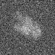

最小
最大
平均値
標準偏差
標準誤差
0
65.5929
5.45036
12.3043
0.153804
| オプション | 必須項目/選択項目 | 説明 | デフォルト |
|---|---|---|---|
| -i | 必須 | 入力ファイル設定 | NULL |
| -o | 必須 | 出力ファイル設定 | NULL |
| -SD | 選択 | 標準偏差の値を設定（設定しない場合は計算した値を代入） | 1.0 |
| -NS | 選択 | N/S比の値を設定（値が低いほど性能が良くなる） | 1.0 |
| -SN | 選択 | S/N比の値を設定（値が高いほど性能が良くなる） | 1.0 |
| -H | 選択 | 閾値の最大値を設定 | 1.0 |
| -L | 選択 | 閾値の最小値を設定 | 1.0 |
| -h | 選択 | ヘルプを表示 |
|
最小 |
0 |
|  | 最小 |
-58.2366 |
| 標準偏差の値を5に設定 | 最小 |
-15.9686 |
|
| 標準偏差の値を10に設定 | 最小 |
-40.2798 |
|
| 標準偏差の値を30に設定 | 最小 |
-120.839 |
| N/S比の値を1に設定 | 最小 |
-57.891 |
|
| N/S比の値を10に設定 | 最小 |
-554.53 |
|
| N/S比の値を0.1に設定 | 最小 |
-6.09959 |
| S/N比の値を1に設定 | 最小 |
-65.3038 |
|
| S/N比の値を10に設定 | 最小 |
-6.99898 |
|
| S/N比の値を0.1に設定 | 最小 |
-573.844 |
| 最大値を1に設定 | 最小 |
-1.05484 |
|
| 最大値を50に設定 | 最小 |
-50.8178 |
|
| 最大値を100に設定 | 最小 |
-57.8901 |
| 最小値を1に設定 | 最小 |
-53.0655 |
|
| 最小値を50に設定 | 最小 |
-12.5503 |
|
| 最小値を0.1に設定 | 最小 |
-54.8919 |